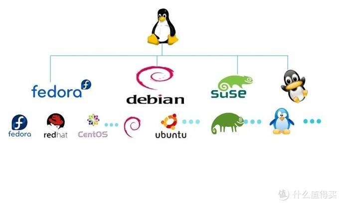

国
产
系
统
中共嘉峪关市委统战部 方圆
林纳斯
本纳第克特
托瓦兹
Linux内核
开 源

Linux内核
真正
多用户 多任务
支持多线程和多CPU
十分稳定
86%
企业使用Linux操作系统进行云计算、大数据平台的构建
国产系统
银河麒麟
中标麒麟
红旗
深度（Deepin）
UOS等
国产系统
算
不
算
国
产
Windows和UOS的区别
文件系统
Windows:
FAT，NTFS
UOS:
EXT4，BtrFS，XFS
Windows和UOS的区别
可执行文件
Windows:
exe msi
UOS:
权限
网络安全
没
有
绝
对
的
安
全
常见问题
国产系统那点事golang